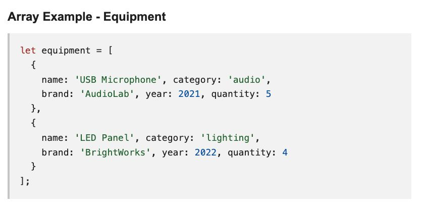
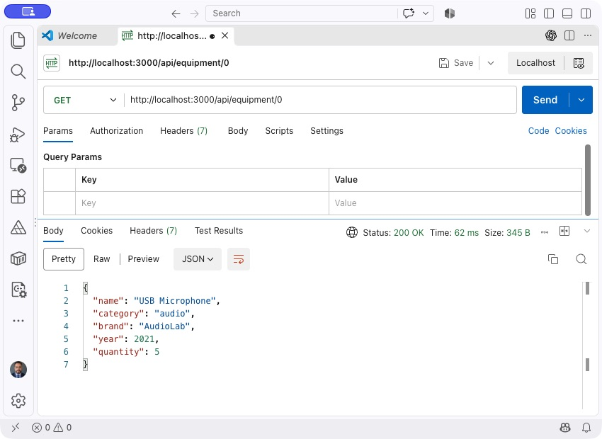

Your task for the COMP229 midterm is to wire up a RESTful API that manages a collection of equipment. An Express server is already configured to run on port 3000, and a starter collection of equipment data is provided - you just need to implement each endpoint.
Duration: 120 minutes.
Download the instructions PDF.
The starter data lives in server.js, but you must complete the logic for every endpoint above. Array indexes start at 0: /api/equipment/0 refers to the first item.
Below is an example of the object structure you will manipulate. An array containing five equipment items is already provided in the code.

Add exactly two equipment items to the starter array based on the last digit of your student ID:
Example: Student ID 301234567 ends in 7, so add two equipment items released between 2020-2026.
{
name: 'Equipment Name',
category: 'Category',
brand: 'Brand Name',
year: 2024,
quantity: 2
}
Capture at least one API response that clearly displays the entire personalized collection (starter equipment + your two additions = 7 total).
Download the starter ZIP. If you already downloaded it, use your existing copy.
Extract the ZIP to a folder on your computer. If you already extracted it, continue to step 3.
In VS Code, select File > Open Folder. Open the extracted folder that contains package.json and server.js.
In VS Code, select Terminal > New Terminal. The terminal must be in the project folder containing package.json. Run:
npm install
In the same terminal, run:
npm start
The server listens on port 3000. Stop it with Ctrl+C and restart after editing.
Open Postman (desktop or VS Code extension), Thunder Client, Insomnia, or a similar tool. Send requests to http://localhost:3000 using the six endpoints listed above.
Use the correct method and URL for each request. For POST and PUT, select a raw JSON body and enter the equipment data. Check the response payload and HTTP status code.
You can also run the automated API checks in a terminal:
npm test
The tests start and stop their own server. They check the six endpoints and the seven-item starting collection. Failures are expected until you implement the endpoints and add your two items. Your student-ID personalization and submission screenshots still need to be reviewed.
Screenshots Provide clear evidence of testing for all six endpoints. Every screenshot must show:
Filename convention: [StudentID]_[LastName]_[EndpointNumber]_[Method].png
Example: 301234567_Smith_01_GET_ALL.png
Need a reference? The screenshot below shows the expected Postman layout.

Code Submission
node_modules and .git.Reflection (optional, but recommended) Summarize in a short paragraph how you validated each endpoint and any edge cases considered.
Warning: Submissions are reviewed for
Suspected irregularities will be investigated according to academic integrity policies.
Write clean, well-structured code, validate inputs, and handle errors gracefully. You've got this!